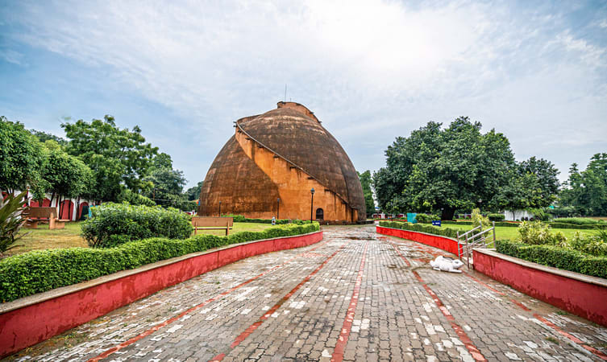

Built back in 1786 under the commands of the erstwhile Governor General of India, Warren Hastings, Golghar was aimed at serving as a gigantic granary to store grains that can be utilized at the time of potential famine.
However, the said purpose was never met and at present Golghar serves as one of the famous historical monuments in Bihar. Resembling a beehive, this building features no pillars, but a spiral staircase having 145 steps that take you to the topmost part of the dome. Standing atop the dome, the visitors can soak in the breathtaking panoramic views of the lush garden, the picturesque Ganges, and the bustling cityscape.
Historical Facts:
-The Golghar was intended to be the first storage to be used for storing grains for emergency
-The construction of this storage completed on 20th of July in 1786
-The construction has a beehive like shape which was designed by Captain John Rrastin of Bengal Tigers.
-Inside the structure lies a spiral staircase which was built to ease the movement of workers while loading the grains.
Architecture:
-The construction has a stupa like architecture and has a height of 29m.
-Being such a large structure, the place remains pillarless and is sustained only by a great wall.
-You will be required to climb 145 steps of Golghar to reach its top.
What special it has: Other than its marvellous structure, Golghar will also let you enjoy an uninterrupted panoramic view of the sunset along the river from its top.
Location: Ashok Rajath, Patna, Bihar
Timing: 10 AM to 5 PM